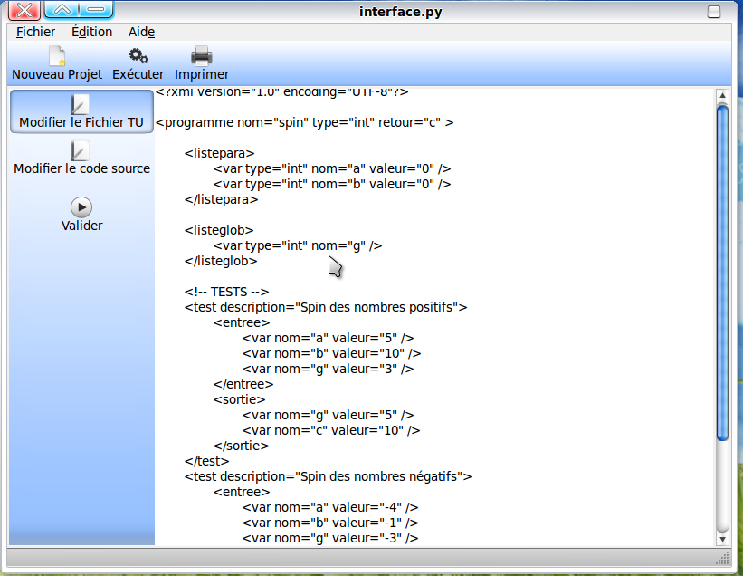

Modifier Fichier TU :
La commande Modifier Fichier TU permet à l'utilisateur de modifier le fichier C; on l'utilise comme suite:
- Double clique sur la commande Modifier Fichier TU;
- Directement vous aurez l'editeur de texte affiché.
- Vous pouvez modifier le fichier et après
- Vous cliquez sur valider pour valider la modification apportée.
- Ou vous cliquez sur Fichier/Enregistrer pour enregister le fichier modifié.
- Si vous désirez imprimer le fichier, cliquer sur imprimer.
Voici un aperçu de cette image
